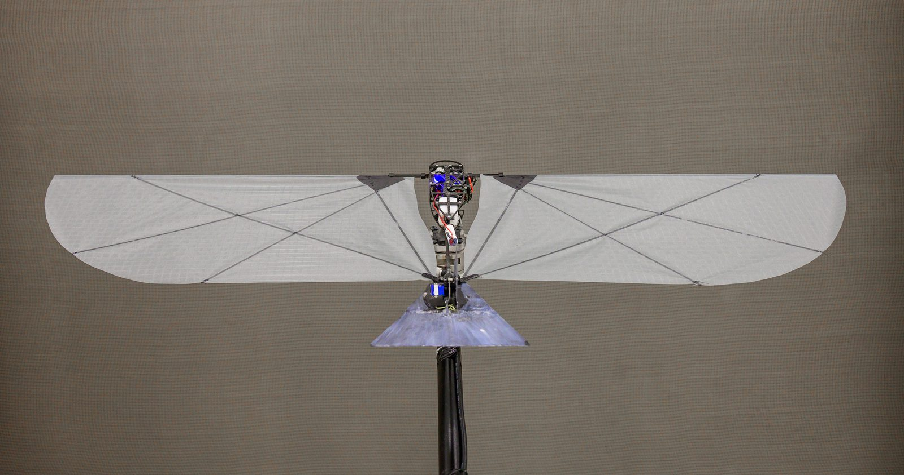

Research Tank
Our 12m x 5m x 1.5m research tank for aquatic testing.

At the MIT AURA lab, we study bio-inspired methods and unconventional designs to
solve seamless aerial and aquatic locomotion for applications in ocean sciences.
Since 2025.

“Many birds can traverse both air and water, transitioning between the different elements according to their needs. Gulls, puffins, loons and petrels are all such boundary crossers.”
Read the story
The Times covers the lab’s flapping-wing aerial-aquatic vehicle, a 250-gram robot that uses one set of wings to both fly through the air and swim underwater.
Read the story
“Mechanical engineer Raphael Zufferey’s lab at MIT contains a giant tank filled with bright turquoise water, an array of fans that can whip up a powerful wind, and small flying robots perched everywhere you look.”
Read the story
“Loons, gulls, puffins, and petrels are some of the 100 species of birds that can both fly and swim. These diving birds can plunge in water to swim after prey, and leap back into the air to fly away.”
Read the story
We develop new propulsion methods to enable both flight and underwater locomotion in robots, with a particular focus on transitions & bio-inspiration. We are currently solving challenging transition questions through experimental methods and are studying autonomy, simulation and integration aspects.

The ultimate objective of our robotic systems is to operate in our ocean and waterways without user intervention, and have a positive impact for oceanographers, biologists. To this end, we seek to understand how non-intrusive, small-scale systems can deliver high quality data in a cost-effective manner.
Current projects and future research directions for the lab.

A Flapping-wing Aerial Aquatic Vehiclecapable of both flight and swimming. The first robot of it's kind to successfully transition from water to flight.

A large-scale flapping wing robot designed to answer questions in both controls and actuation.

An environmental sampling and monitoring active stabilizing hydrofoil. A highly efficient and low-cost surface vehicle.

An exploration of swarming of aerial aquatic vehicles for environmental monitoring and ocean exploration.
Highlights of past research projects. List of publication on ORCID and Google Scholar.

Large-scale flapping-wing robots with physical contact capabilities. Perching on a branch has been achieved!

A novel water-reactive fuel thruster for impulsive take-off, allowing multiple jump-gliding from the water surface.

Sailing-Flying locomotion method for long-duration aerial-aquatic missions thanks to wind energy harvesting.

Aquatic escape of a 160 milligram robotic bee using flapping flight, hydrogen combustion and electrolysis.
A new graduate class, offered for the first time in Fall 2026, that treats flight and swimming as
two sides of the same fluid dynamics problem. Students work through the full robot development
stack end to end - motor control, wing design, fabrication and waterproofing - and the
semester closes with a competition on swimmer speed and efficiency.
More
on the MechE class page
The cornerstone undergraduate design class, taught in the spring, where students build competence
and confidence as design engineers through a major design-and-build project. Topics span idea
generation, estimation, concept selection, CAD, mechanism design, machine elements and basic
electronics, and the term ends with the traditional 2.007 robot competition.
More on the MechE class
page

PI

Postdoc

Grad student

PhD student

PhD student

PhD student

SuperUROP

UROP

UROP

Visiting MSc (2026)

Visiting MSc (2026)

Visiting MSc (2025)
Research Engineer (2026)

Visiting MSc (2025-2026)

Visiting MSc (2025)
I am looking for motivated students that are excited to study and develop the next generation of hybrid autonomous systems.